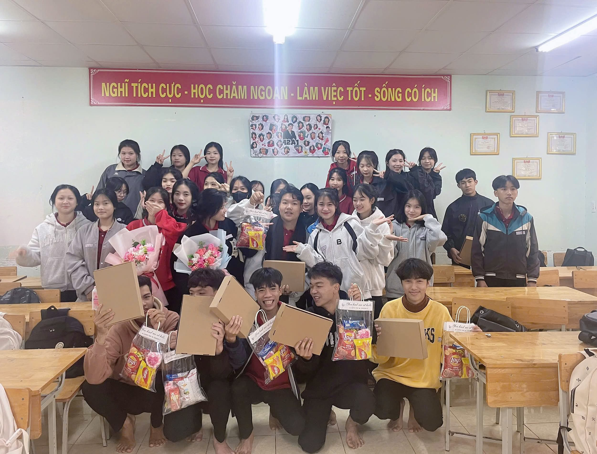
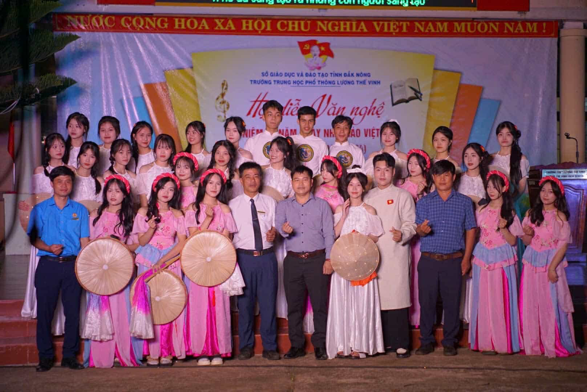
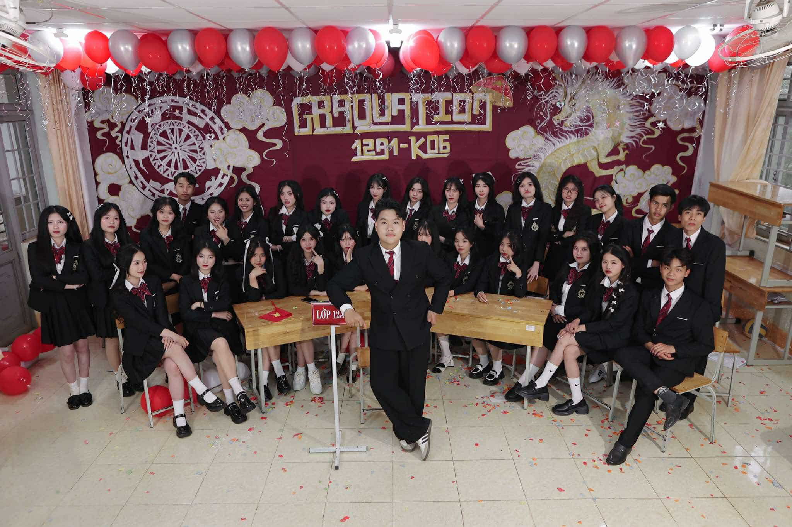
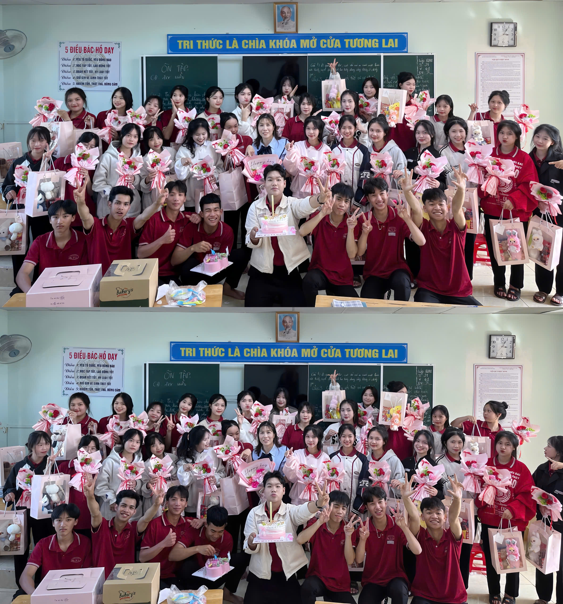

8/3 - Hành trình yêu thương và những kỷ niệm khó quên
Những Năm Tháng Rực Rỡ - Hành Trình Cuối Cùng
Ba năm cấp 3 trôi qua như một cái chớp mắt, nhưng những kỷ niệm đẹp đẽ và ý nghĩa vẫn luôn in đậm trong lòng mỗi người.
Chúng ta đã cùng nhau trải qua những buổi sáng vội vàng đến lớp, những giờ kiểm tra căng thẳng, những lần cùng nhau ôn bài thâu
đêm hay cả những khoảnh khắc vui đùa hồn nhiên không lo âu. Từng góc sân trường, từng hàng ghế lớp học, từng trang sách cũ
đều ghi dấu bao câu chuyện đáng nhớ. Có những lúc cười đùa sảng khoái, cũng có lúc rơi nước mắt vì áp lực, nhưng chính những
điều đó đã làm nên một thanh xuân trọn vẹn. Không chỉ là bạn học, chúng ta còn là những người bạn đồng hành, cùng nhau vượt
qua khó khăn, chia sẻ niềm vui và cả những ước mơ về tương lai. Cấp 3 không chỉ là quãng thời gian để học tập mà còn là nơi gắn
kết những tình bạn đẹp đẽ, là nơi lưu giữ thanh xuân tươi đẹp nhất Website này sẽ là nơi lưu trữ những khoảnh khắc quý giá, những
bức ảnh, những dòng cảm xúc mà chúng ta muốn mãi mãi khắc ghi. Dù sau này mỗi người có một con đường riêng, nhưng hy vọng rằng khi
nhìn lại, chúng ta vẫn sẽ mỉm cười vì đã có một hành trình tuyệt vời bên nhau.
Cùng nhau trưởng thành - Cùng nhau nhớ mãi!
Năm đầu tiên bước vào lớp 10, bọn mình lần đầu gặp nhau, ai cũng mang trong mình sự bỡ ngỡ và e dè. Mỗi người
đều còn lạ lẫm với môi trường mới, với những gương mặt chưa quen thuộc. Tuy nhiên, sau khi nhà trường tổ chức các
sự kiện tập thể như hoạt động giao lưu, trò chơi đội nhóm và hội thao, chúng tôi dần xích lại gần nhau hơn. Những
tiếng cười giòn tan, sự phối hợp nhịp nhàng trong các trò chơi đã giúp bọn mình làm quen và hiểu nhau hơn
. Từ đó, lớp bắt đầu hình thành một sự đoàn kết bền chặt, trở thành một tập thể gắn bó như một gia đình nhỏ,
nơi mọi người luôn sẵn sàng sẻ chia và giúp đỡ lẫn nhau.
Buổi văn nghệ đầu tiên của lớp 10 là một cột mốc đáng nhớ, đánh dấu sự nỗ lực chung của cả lớp. Từ những ngày
đầu còn lúng túng, bọn mình đã cùng nhau lên ý tưởng, phân chia nhiệm vụ và tập luyện không ngừng nghỉ. Dù
có những lúc mệt mỏi hay bất đồng ý kiến, tất cả đều cố gắng vượt qua để mang đến một tiết mục hoàn hảo
nhất. Khoảnh khắc đứng trên sân khấu, dưới ánh đèn rực rỡ và tiếng vỗ tay của mọi người, bọn mình cảm nhận
được thành quả từ sự đồng lòng và cố gắng hết mình. Đó không chỉ là một buổi văn nghệ, mà còn là khởi đầu
cho những nỗ lực khác, giúp bọn mình học cách đoàn kết và gắn bó hơn trên chặng đường phía trước.
Sau một ngày đầy thử thách, đội bóng chuyền nữ lớp mình đã xuất sắc giành chiến thắng trong trận quyết định
với lớp 12. Dù vất vả trước những pha bóng căng thẳng, tinh thần đoàn kết và chiến thuật sắc bén đã giúp
cả đội vượt qua mọi khó khăn. Tiếng còi kết thúc vang lên cùng niềm vui và tự hào bùng nổ, bởi chiến thắng
này không chỉ là vinh quang mà còn là minh chứng cho sự đồng lòng và kiên trì của cả tập thể.
20/10 đầy nhẹ nhàng
Ngày 20/10 năm ấy thật nhẹ nhàng và đơn giản. Không có những buổi lễ rộn ràng hay những món quà cầu kỳ,
chỉ là một bó hoa nhỏ với những cánh hồng tươi thắm được đặt cẩn thận lên bàn. Kèm theo đó là những
lời chúc chân thành: "Chúc các bạn nữ luôn vui vẻ và hạnh phúc, mãi là những bông hoa đẹp nhất."
Vào một buổi chiều tuyệt vời của ngày mùng 8 tháng 3, khi tiết học văn gần kết thúc,
không khí trong lớp tràn ngập sự háo hức và vui tươi. Các bạn nữ chia nhau ra sân chơi bóng chuyền,
trong khi những bạn khác vẫn đang mải miết ngồi trên lớp, tập trung vào bài vở. Thế nhưng, chúng tôi
- những chàng trai trong lớp, quyết định tạo một bất ngờ thật đặc biệt cho các bạn nữ
. Chúng tôi lén lút "cúp tiết" và chuẩn bị mọi thứ để mang đến một ngày không thể nào quên
. Và rồi, sự thành công của kế hoạch bất ngờ đó đã tạo ra những khoảnh khắc khó quên,
khiến không chỉ các bạn nữ mà tất cả chúng tôi đều cảm thấy ấm lòng, hạnh phúc và đầy ắp niềm vui
. Một buổi chiều không chỉ ngọt ngào mà còn đong đầy sự gắn kết và tình bạn
Những thước phim đầy kỉ niệm của chúng ta
Năm Cuối Cấp - Thanh Xuân Rực Rỡ Nhất - Dấu Ấn Cuối Cùng Của Thời Học Sinh

Ngày 19/11, trong không khí bình thường của buổi học sáng, chẳng ai ngờ rằng chúng tớ những chàng trai trong lớp
lại có một bất ngờ lớn như vậy. Khi vừa bước vào lớp lúc 15 phút đầu giờ, bọn tớ đã được các bạn nữ chuẩn bị những món
quà đầy ý nghĩa. Không cần những lời hoa mỹ, cũng không hề báo trước, các bạn nữ đã chuẩn bị những túi quà đầy ắp bánh
kẹo, sữa và đặc biệt là một chiếc áo sơ mi đen rất đẹp. Ai cũng bất ngờ và cảm thấy ấm áp khi nhận được những món quà
này, bởi đó không chỉ là những món đồ đơn thuần mà còn chứa đựng sự quan tâm, tinh thần gắn kết của cả lớp. Khoảnh khắc
đó, chúng tớ không chỉ cảm thấy bất ngờ mà còn thực sự cảm động. Trong suốt những năm tháng học chung, những ngày như 8/3,
20/10 đã trở thành thói quen để bọn tớ chuẩn bị điều đặc biệt cho các bạn nữ. Nhưng hôm nay, lần đầu tiên, chúng tớ được
đặt vào vị trí của những người nhận. Cảm ơn các bạn nữ, những người bạn đồng hành tuyệt vời suốt những năm tháng cấp ba.
Thanh xuân của chúng ta có nhau, thế là đủ
Đêm Hội Văn Nghệ - Khi Thanh Xuân Rực Rỡ Trong Ánh Đèn Sân Khấu

Tối hôm đó, sân trường rực rỡ trong ánh đèn lung linh, không khí sôi động với những tràng pháo tay và tiếng reo hò không ngớt.
Chúng mình những thành viên của lớp đã có một buổi biểu diễn không thể nào quên, khi từng bước nhảy, từng giai điệu vang lên
hòa quyện cùng cảm xúc và nhiệt huyết tuổi trẻ.Với sự chuẩn bị kỹ lưỡng và niềm đam mê, lớp mình đã xuất sắc giành giải Nhì
và Ba trong cuộc thi văn nghệ chào mừng ngày Nhà giáo Việt Nam. Khoảnh khắc được xướng tên trên sân khấu, cả lớp vỡ òa trong
niềm vui và tự hào. Đó không chỉ là một chiến thắng mà còn là minh chứng cho sự đoàn kết, cố gắng hết mình của tất cả mọi người.
Cảm ơn tất cả vì một đêm thanh xuân rực rỡ, vì những tiếng cười, những giọt mồ hôi và những ký ức khó quên!
Xuân Về Bên Mái Nhà Thầy - Khi Tình Thầy Trò Là Mãi Mãi
Dù năm nay nhà trường không tổ chức hội xuân, nhưng điều đó chẳng thể làm vơi đi tinh thần ngày Tết của lớp mình.
Thay vì đến trường như mọi năm, chúng mình đã cùng nhau đến thăm nhà thầy, mang theo những món quà nhỏ nhưng chứa
đựng biết bao tình cảm và sự kính trọng. Trong không khí ấm áp của những ngày cuối năm, cả lớp quây quần bên thầy,
trao nhau những lời chúc tốt đẹp, những nụ cười rạng rỡ. Không gian rộn ràng tiếng cười nói, niềm vui giản đơn nhưng
thật ý nghĩa. Đây không chỉ là một buổi chúc Tết, mà còn là khoảnh khắc đáng nhớ, ghi dấu tình thầy trò thiêng liêng mà
không năm tháng nào có thể phai mờ. Một mùa xuân mới lại đến, chúc thầy luôn mạnh khỏe và hạnh phúc, chúc cả lớp mãi gắn kết như hôm nay
Dưới mái trường thân yêu, những chàng trai khoác lên mình bộ vest lịch lãm, những cô gái dịu dàng trong tà áo dài trắng tinh khôi.
Cả lớp cùng nhau ghi lại hình ảnh trang trọng, đánh dấu cột mốc trưởng thành. Sự hồn nhiên xen lẫn cảm xúc luyến tiếc khi biết rằng,
quãng thời gian bên nhau không còn dài nữa.
Buổi chiều - Cá tính và rực rỡ

Tạm biệt sự trang nhã của áo dài, các cô gái chuyển sang những bộ váy trẻ trung, năng động, các chàng trai vẫn giữ nguyên vẻ chững
chạc nhưng không kém phần phóng khoáng. Không gian lớp học trở nên sôi động hơn với những nụ cười rạng rỡ, những khoảnh khắc nghịch
ngợm đầy sức sống. Đây chính là phiên bản đẹp nhất của mỗi người - một tuổi trẻ rực rỡ, tự tin và tràn đầy khát vọng.
Ký ức còn mãi
Thời gian trôi nhanh, nhưng những thước phim hôm nay sẽ mãi là minh chứng cho một thanh xuân đáng nhớ. Một ngày nào đó, giữa những bộn bề
cuộc sống, khi vô tình nhìn lại, ta sẽ thấy hình bóng của chính mình năm ấy, của những người bạn từng sát cánh bên nhau, và cả những ước
mơ vẫn đang chờ ta thực hiện.
Cảm ơn vì đã cùng nhau tạo nên một thanh xuân thật đẹp

8/3 CUỐI CÙNG - LƯU GIỮ THANH XUÂN, TRỌN VẸN YÊU THƯƠNG
Thời gian trôi qua nhanh như một cái chớp mắt, và hôm nay, chúng ta cùng nhau đón một ngày 8/3 thật đặc biệt - ngày Quốc tế Phụ nữ cuối
cùng dưới mái trường cấp 3. Không chỉ là những món quà nhỏ xinh như gấu bông, móc khóa, bánh kẹo, sữa hay những bó hoa tự tay chuẩn bị,
mà điều quý giá nhất chính là tình cảm chân thành, là những nụ cười rạng rỡ và những cái ôm ấm áp. Sự bất ngờ được ấp ủ từ những ngày
trước, những ánh mắt háo hức chờ đợi khoảnh khắc vỡ òa, khi các bạn nữ nhận ra mình đang được yêu thương nhiều đến thế. Mỗi món quà không
chỉ là vật kỷ niệm mà còn là một phần của thanh xuân, của những năm tháng đẹp nhất đời người. Cảm ơn vì đã bên nhau, đã cùng tạo nên một ngày
8/3 không thể nào quên. Sau này dù có đi đến đâu, mỗi khi nhìn lại, chúng ta vẫn sẽ nhớ về lớp học này, về những người bạn đã từng cùng nhau cười đùa, dành cho nhau những điều tuyệt vời nhất.
Thanh xuân có hạn, nhưng kỷ niệm thì mãi mãi
{kind=link}
{kind=link}
{kind=link}


{kind=link}
{kind=link}
{kind=link}